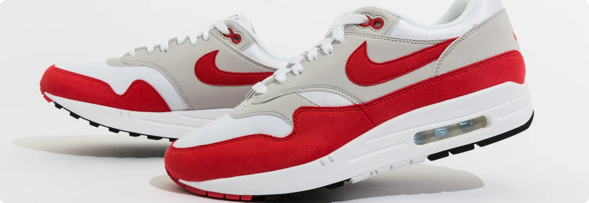
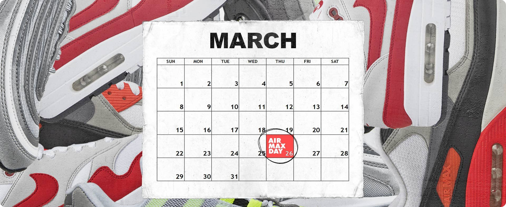

18:00 - Выставка самых редких пар от коллекционеров
19:00 - Фотосессия
20:00 - Завершение
Nike Air Max Dn
26 марта 2024 были выпущены в честь ещегодного праздника и модель призвана заново изобрести и вдохнуть новую
жизнь в знаменитый мир Air.
Пару прозвали, как "начало будущего Air"
Nike Air Max Dn не только внешне отличаются от предыдущих моделей Air Max, но и весь их механизм
претерпел
изменения. В первую очередь инновация Dynamic Air — она реализована в виде блока Air с четырьмя трубками,
разработанного для оптимального комфорта.
"Когда мы планировали разработать новые Air Max для нынешнего поколения, мы стремились переосмыслить
ощущения от подушки Air и то, каково это — ходить по "воздуху", — говорит Кэти Гомес, вице-президент Nike
NXT Footwear.
История праздника AIR MAX DAY
Первая модель Air Max появилась в 1987 году. Это были самые революционные кроссовки того времени, ставшие
основой для многих поколений Max в семье Nike. В 2024 году исполняется 37 лет со дня создания Air Max.
Технология Air обеспечивает легкость и хорошие амортизационные свойства обуви, особенно во время бега или
прыжков. Правда, основа этой технологии — капсулы сжатого воздуха — не нова и появилась еще в конце 70-х
в модели Tailwind, разработанной для марафона на Гавайях. Вторым знаменитым пришествием стали Nike Air Force —
баскетбольные кроссовки, в которых воздушная подушка была установлена уже вдоль всей подошвы.

Как и зачем отмечают AIR MAX DAY?
Праздновать Air Max Day начали только в 2014 году. Nike с партнерскими магазинами организовали ряд событий в самых
больших городах США, Европы и Азии. Теперь к AM Day хотят приобщиться все больше людей и магазинов. Nike Air Max
Day также празднуют и в странах СНГ
Новые Air Max выходят каждый год, и их продают ограниченным тиражом, чтобы поддерживать ажиотаж и ценность
франшизы. В 2024-м была выпущена технологичная модель — Air max DN.

Nike сделали прекрасный маркетинговый ход, рекламируя свою линейку обуви с амортизацией «Air Max» каждый год.
Но нельзя сказать, что это праздник, созданный исключительно для продаж. Air Max Day ориентирован на людей,
которые интересуются сникер-культурой, являются ее частью или просто любят кроссовки Air Max.